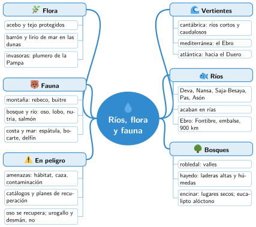

Bloque I · Cantabria, patrimonio natural
UD03 Ríos, flora y fauna
Sesiones
- Sesión 3.1 La red hidrográfica de Cantabria
- Sesión 3.2 Los principales ríos: Ebro, Asón, Pas, Besaya, Saja, Nansa y Deva
- Sesión 3.3 Bosques autóctonos: robledales, hayedos y encinares
- Sesión 3.4 Flora característica
- Sesión 3.5 Fauna terrestre y marina
- Sesión 3.6 Especies protegidas y en peligro de extinción
Al terminar la unidad
Mapa mental de la unidad

✏️ Repasa la unidad con el mapa: tapa una rama y explica en voz alta lo que pone.